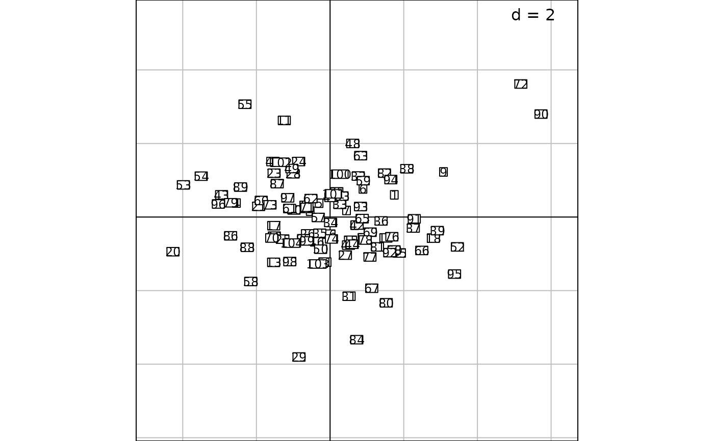
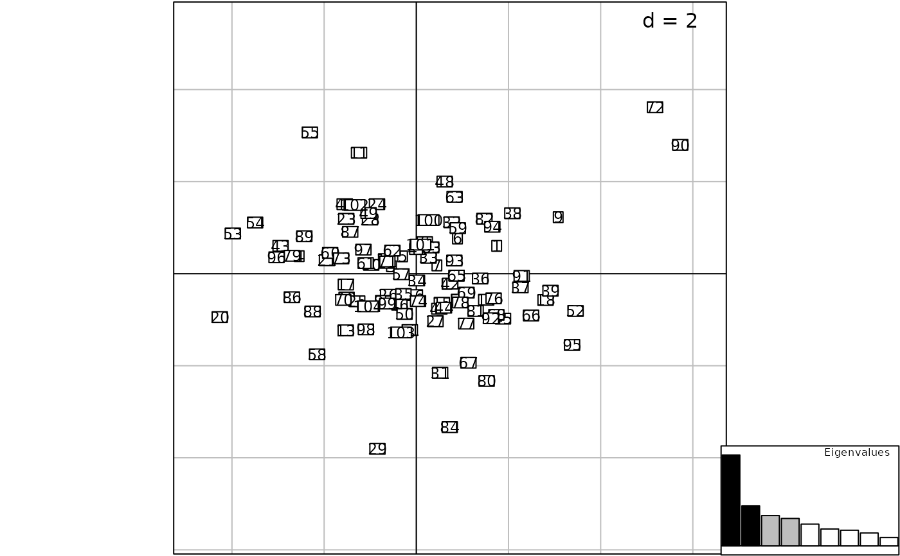

Insert a graphic into an existing one
insert.RdThis function inserts a first graphic into a previously created and/or a displayed one.
Usage
insert(graphics, oldgraphics, posi = c("bottomleft", "bottomright", "topleft",
"topright"), ratio = 0.2, inset = 0.0, plot = TRUE, which, dispatch = FALSE)Arguments
- graphics
an object of class
ADEg,ADEgSortrellis- oldgraphics
an object of class
ADEg,ADEgSormissing. Ifoldgraphicsismissing,graphicsis added on the current device.- posi
a character value or a two-length numeric vector (in normalized parent coordinates
npcfrom 0 to 1) indicating the position ofolgraphicsadded intographics- ratio
a numeric value from 0 to 1 indicating the size of
olgraphicsregarding the plot region- inset
the inset from which the graph is drawn regarding the plot region. It can be a two-length vector giving the inset in x and y. If atomic, same inset is used in x and y.
- plot
a logical indicating if the graphics is displayed
- which
a numeric value or a vector of values only used if
oldgraphicsis anADEgSobject, indicating the which-th sub-graphic ofoldgraphicswheregraphicsis added.- dispatch
a logical only used if both
graphicsandoldgraphicsareADEgSobjects with same length, indicating ifgraphicsis added one by one intoldgraphics. It is used when bothgraphicsandoldgraphicsare created withfacetsoption.
Author
Alice Julien-Laferriere, Aurelie Siberchicot aurelie.siberchicot@univ-lyon1.fr and Stephane Dray
Examples
data(deug, package = "ade4")
dd1 <- ade4::dudi.pca(deug$tab, scannf = FALSE, nf = 4)
g1 <- s.label(dfxy = dd1$li, labels = rownames(dd1$li), plabels = list(cex = 0.75), plot = FALSE)
g2 <- s1d.barchart(score = dd1$eig, plot = FALSE,
ppolygons = list(col = c(rep("black", 2), rep("grey", 2), rep("white", 5))),
p1d = list(horizontal = FALSE), psub = list(position = "topright", text = "Eigenvalues"),
pgrid = list(draw = FALSE), pbackground = list(box = TRUE), xlim = c(0.5, 9.5))
g1

g3 <- insert(g2, plot = FALSE)
mat <- g3@positions
mat[2, ] <- c(0.8, 0, 1, 0.2)
update(g3, positions = mat, plot = FALSE)
print(g3) ## square == NULL
print(g3, square = TRUE)
print(g3, square = FALSE)

g4 <- insert(g2, g1, posi = "topleft")
data(jv73, package = "ade4")
pca1 <- ade4::dudi.pca(jv73$morpho, scannf = FALSE)
g5 <- s.value(jv73$xy, pca1$li[, 1:2], porigin.include = FALSE, plot = FALSE)
g6 <- s.corcircle(pca1$co, pbackground.box = FALSE, plot = FALSE)
g7 <- insert(g6, g5, posi = c(0.3, 0.4, 0.5, 0.6))